statistical_model.RmdWe are currently developing and refining a statistical model to predict flow-to-suitable-habitat-area relationships for stream reaches in the Sacramento-San Joaquin Basin, based on a variety of widely-available geospatial and hydrologic variables. Predictor variable data collection is detailed in the Predictor Variables article.
In practice, suitable habitat area is modeled as a function of flow, the suite of predictor variables, and the interactions between each predictor variable and flow. As applied in a linear regression model, the general functional form for the model is as follows. The use of the interaction terms allows the model to estimate not only the average effect of each predictor variable on suitable area, but also the effect of each predictor variable on the flow-to-suitable-area relationship.
Expressed without using matrix notation, the model estimate for each NHD ComID reach and flow is…
… and so on for all other predictor variables with estimated coefficients , , , , etc.
We originally log-transformed the habitat, flow, and predictor variables for three reasons: (a) to limit the effect of extreme values; (b) to align with typical hydrologic conventions of using power series models; and (c) for interpretability because log-log model coefficients represent elasticities (“percent change in y per percent change in x). Because some predictor variables include values less than or equal to zero, the log transformation was replaced with a variation on the inverse hyperbolic sine (asinh) transformation. Because , this transformation behaves like a log transformation for positive values () but remains defined for zero values and has a comparable, mirrored shape for negative values.
Additionally, all predictor variables were centered and scaled after transformations were applied.
The length (linear ft) of each reach (comid) was applied
as a case weight. Reaches vary substantially in length from several feet
to 26 miles, with a mean length of 1.2 miles. Weighting the estimate by
linear ft allows longer reaches to have greater influence on the model
and makes the somewhat arbitrary comid delineations less
relevant.
#> Warning in log(x): NaNs produced
#> Warning in log(x): NaNs produced
#> Warning: Removed 30 rows containing missing values or values outside the scale range
#> (`geom_line()`).
#> Removed 30 rows containing missing values or values outside the scale range
#> (`geom_line()`).
Two forms of the model were tested, discussed in sequence in the following sections.
This is the simplest and most straightforward version of the model.
Habitat variable: Suitable habitat area (WUA) per linear ft, aka “effective habitat width”
Flow variable: Flow (cfs)
Predictor variables:
- Reach characteristics: slope, bankfull depth, bankfull width-depth ratio, baseflow index, % clay, % sand, permeability, depth to bedrock, mean annual precipitation, MTPI (topographic position index), valley bottom width, valley bottom-bankfull width ratio, fractional levee confinement, channel sinuosity
- Catchment characteristics: drainage area, mean elevation, mean annual precipitation, avg erodibility, avg slope, avg NDVI
Transformations:
- Inverse hyperbolic sine
- Interaction between slope and drainage area
- Center and scale all predictors
Model forms: Linear regression; Random forest regression
This model is a variation on Version 1. It is intended to deal with the problem of differing ranges of flows across training datasets on account of the differing sizes of the river systems.
A scalar was defined for each reach (comid),
representing the magnitude of flow in the watershed. A product of the
drainage area and mean annual precipitation with units of million acre
feet (Maf), this value represents the average quantity of water input
into the reach’s catchment in a year:
The habitat and flow variables are multiplied by this scalar prior to prediction, then divided by the scalar after prediction.
Habitat variable: Suitable habitat area (WUA) per linear ft normalized by DA*MAP
Flow variable: Flow (cfs) normalized by DA*MAP
Predictor variables:
- Reach characteristics: slope,
bankfull depth, bankfull width-depth ratio, baseflow index, % clay, % sand, permeability, depth to bedrock,mean annual precipitation, MTPI (topographic position index), valley bottom width, valley bottom-bankfull width ratio, fractional levee confinement, channel sinuosity- Catchment characteristics: drainage area, mean elevation, mean annual precipitation, avg erodibility, avg slope, avg NDVI
Transformations:
- Inverse hyperbolic sine
Interaction between slope and drainage area- Center and scale all predictors
Model forms: Linear regression; Random forest regression
Compared to Version 1, the normalized Version 2 model creates flow-to-suitable-area curves that are more strongly proportional to the size of the river.
TODO: Expand, just show some images of initial exploration, doesn’t need to be the final version.
Doesn’t produce a great fit, but useful for exploring effects of predictor variables
Collinearity between variables is not addressed as this is only exploratory
Random Forest Regression is a decision tree based machine learning alternative to linear regression. The model specifications are essentially identical to the linear regression formulations previously discussed. Unlike linear regression, there is no constraint on the functional form of the flow-to-habitat relationship or the effects of predictor variables.
The trained statistical model can now be used to predict flow-to-suitable-area relationships for other streams within the study area. While the statistical model will produce predictions for any stream with valid predictor data, the validity and trustworthiness of predictions will depend on those streams’ similarity to the training dataset. As training datasets are currently limited to foothill alluvial systems on major tributary streams, only these should be considered valid.
TODO: show results map overview images from the model methods comparison script